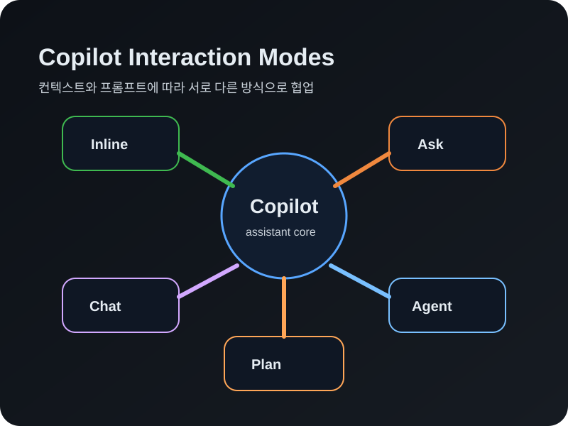

이 실습에서 배우는 것
Ask 모드로 프로젝트를 탐색하고 코드에 대해 질문하기
코드 완성 제안을 받고, 인라인 채팅으로 코드를 편집하기
다단계 코딩 작업을 자율적으로 수행하는 AI 동료
코드 변경 전 구현 계획을 세우고 검토하기
 GitHub Copilot — AI 코딩 어시스턴트
GitHub Copilot — AI 코딩 어시스턴트
GitHub Copilot은 더 빠르고 적은 노력으로 코드를 작성할 수 있도록 도와주는 AI 코딩 어시스턴트입니다.
문제 해결과 협업에 더 많은 에너지를 집중할 수 있게 해줍니다.
Copilot 상호작용 모드
- ⚡ 인라인 제안 — 입력 중 나타나는 코드 완성
- 💭 인라인 채팅 — 특정 코드 블록에 대한 타겟 도움
- 💬 Ask 모드 — 코드베이스에 대한 질문과 탐색
- 🤖 Agent 모드 — 자율적 다단계 코딩 작업
- 🧭 Plan Agent — 구현 전 계획 수립

 Copilot Chat — 대화형 코딩
Copilot Chat — 대화형 코딩
프로젝트를 탐색하고 코드에 대해 질문하기
Ask 모드는 코드베이스와 기술 개념에 대한 질문에 답하도록 최적화되어 있습니다.
Chat으로 할 수 있는 것
@workspace로 프로젝트 구조 파악- 코드가 어떻게 동작하는지 설명 요청
- 터미널에서 잊어버린 명령어 도움 받기
- 아이디어 브레인스토밍과 학습
@workspace로 프로젝트를 소개받고,터미널 인라인 채팅으로 Git 브랜치를 만듭니다.
프롬프트 예시
 인라인 제안 & 인라인 채팅
인라인 제안 & 인라인 채팅
코드 흐름을 끊지 않는 AI 제안
⚡ 인라인 제안 (Ghost Text)
주석이나 코드를 입력하면 Copilot이 그림자 텍스트로 완성 제안을 보여줍니다.
if email in activity["participants"]: ← Tab으로 수락!
💭 인라인 채팅 (Cmd+I / Ctrl+I)
코드를 선택하고 인라인 채팅을 열어 해당 블록만 타겟으로 편집할 수 있습니다.
- 선택한 코드에 대해 설명·리팩터·확장 요청
- 결과를 Keep / Discard로 빠르게 판단
- 커밋 메시지도 ✨ 아이콘으로 자동 생성
인라인 채팅으로 샘플 데이터를 추가합니다.
 Agent 모드 — 자율적 AI 동료
Agent 모드 — 자율적 AI 동료
다단계 코딩 작업을 자율적으로 수행
Agent 모드는 AI 지원 코딩의 차세대 진화입니다. 자율적인 동료 프로그래머로서 다단계 코딩 작업을 수행합니다.
Agent 모드의 특징
- 높은 수준의 요청을 다단계 작업으로 분해
- 관련 파일을 자동 탐색하고 컨텍스트 수집
- 도구를 자동 선택·호출 (터미널, 테스트 등)
- 오류에 반응하여 자동 수정 루프 실행
- 민감한 작업은 승인 게이트로 안전 확보
#codebase 도구로 프로젝트 전체를 탐색하고,참가자 표시·등록 취소 기능을 Agent가 구현합니다.
 Plan Agent — 설계 먼저, 코딩은 나중에
Plan Agent — 설계 먼저, 코딩은 나중에
코드 변경 전 구현 계획을 수립하고 검토
Plan Agent는 코드를 변경하기 전에 솔루션을 설계하도록 도와줍니다.
Plan Agent 워크플로우
- 읽기 전용 리서치로 요구 사항 파악
- 명확한 질문 → 답변으로 계획 보완
- 후속 프롬프트로 계획 개선 가능
- 승인 후 Agent 모드로 핸드오프
계획 → 개선 → 구현하는 전체 흐름을 경험합니다.
 PR에서 GitHub Copilot
PR에서 GitHub Copilot
코드 리뷰와 PR 요약을 AI가 도와줍니다
Copilot PR 요약
PR 설명 도구 모음에서 Copilot 아이콘을 클릭하면, 변경 사항을 기반으로 자동 요약을 생성합니다.
Copilot 코드 리뷰
Reviewers에서 Copilot 리뷰를 요청하면, 일반적인 실수를 잡아내는 첫 번째 리뷰어 역할을 합니다.
- PR 요약 — 모든 변경 사항을 한눈에 파악
- 코드 리뷰 — 일반적인 버그·보안 문제 탐지
- 동료 리뷰 전에 빠른 사전 검토
- 리뷰 코멘트에 대한 수정도 Copilot으로
accelerate-with-copilot → main PR을 만들고,Copilot 요약 & 리뷰 후 병합합니다.
 GitHub Actions — 실습의 비밀
GitHub Actions — 실습의 비밀
뒤에서 자동으로 돌아가는 검증 시스템
이 실습은 GitHub Actions를 사용해 여러분의 진행을 자동으로 확인합니다.
동작 원리
- 1단계: 브랜치 생성 → create 이벤트 감지 →
accelerate-with-copilot확인 - 2단계: 코드 푸시 → push 이벤트 감지 →
app.py수정 확인 - 3단계: Agent 기능 추가 → push 이벤트 감지 → 참가자 표시 확인
- 4단계: 테스트 추가 → push 이벤트 감지 → pytest 통과 확인
- 5단계: PR 병합 → pull_request closed 감지 → merged 확인
 핵심 정리
핵심 정리
컨텍스트 + 프롬프트 + 모델로 동작하는 AI 어시스턴트
@workspace로 프로젝트 탐색, 코드 질문, 학습
Ghost Text로 코드 완성, Cmd+I로 타겟 편집
자율적 다단계 작업 — 기능 추가·버그 수정·리팩터
설계 먼저 → 승인 후 Agent 모드로 핸드오프